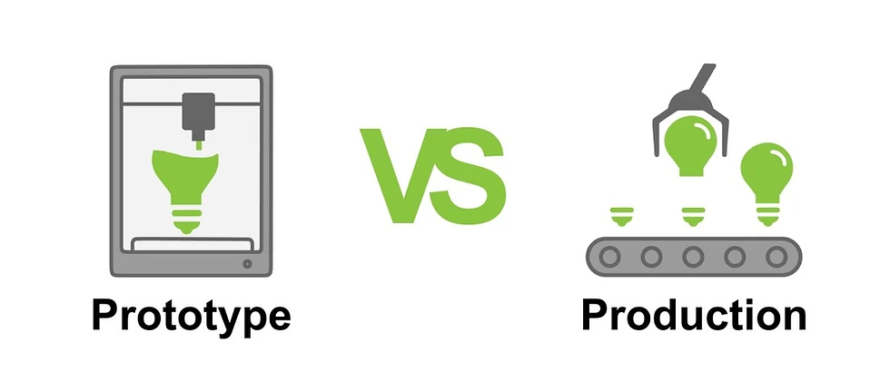
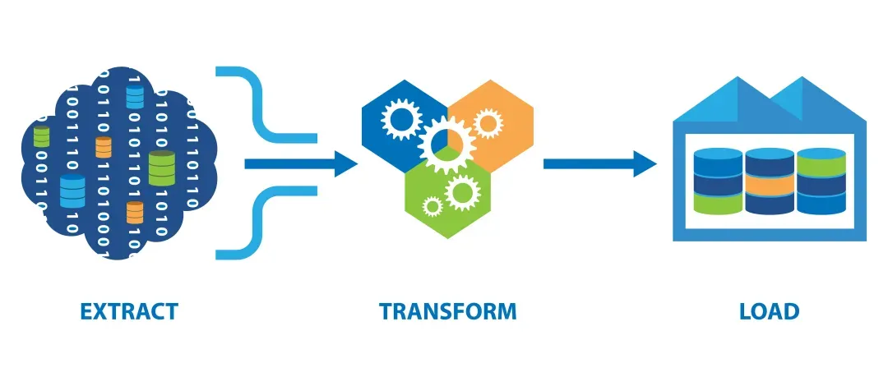
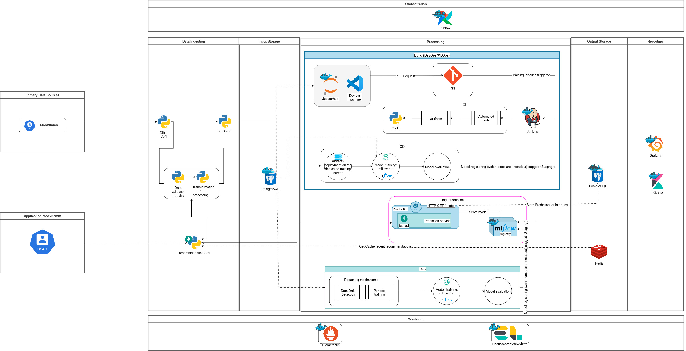

Pipeline de Données
Système de Recommandation Musical
Walid - Développeur Data Senior
Introduction

source
Objectifs
Personnalisation des playlists
Automatisation de l'ingestion des données
Données
Analyse
| Critère | Valeur | Commentaire |
|---|---|---|
| Volume | Faible | Le volume de données des utilisateurs et des titres est relativement faible malgré l'augmentation journalière. |
| Vélocité | Faible | La fréquence de mise à jour quotidienne suggère un flux de données constant mais pas en temps réel |
| Variété | Faible | Des profils d'utilisateurs, des métadonnées de chansons et l'historique d'écoute, la variété de données est faible (nous traitons principalement des données structurées) |
| Valeur | élevée | Données sont cruciales pour fournir des recommandations |
| Véracité | élevée | Provenant d'un système contrôlé, la véracité des données est élevée |
System de Recommendation musical
Caractéristiques utiles
Utilisateur
System de Recommendation musical
Caractéristiques utiles
Musiques
System de Recommendation musical
Caractéristiques utiles
Historiques des Écoutes
System de Recommendation musical
Caractéristiques utiles
caractéristiques Dérivées
- Meilleurs Artistes de l'Utilisateur : Basé sur l'historique d'écoute
- Meilleurs Genres de l'Utilisateur : Combinaison des genres favoris et de l'historique d'écoute
- Popularité du Morceau : Fréquence d'apparition d'un morceau dans les historiques d'écoute
- Popularité de l'Artiste : Fréquence d'écoute des morceaux d'un artiste
- Popularité du Genre : Popularité globale des différents genres
System de Recommendation musical
Caractéristiques utiles
caractéristiques Basées sur le Contenu
- Similarité de Genre : Entre les morceaux et les préférences de l'utilisateur
- Similarité d'Artiste : Basée sur les genres partagés ou la co-occurrence dans les historiques des utilisateurs
- Similarité Textuelle du Nom du Morceau et du Nom de l'Artiste : Pour les recommandations basées sur le texte
System de Recommendation musical
Caractéristiques utiles
caractéristiques de Filtrage Collaboratif
- Similarité Utilisateur-Utilisateur : Basée sur les historiques d'écoute partagés
- Similarité Morceau-Morceau : Basée sur la co-occurrence dans les historiques des utilisateurs
Schéma de données proposé
Au moins en troisième Forme Normale (3NF)
erDiagram
USERS {
int id PK
string first_name
string last_name
string email
string gender
datetime created_at
datetime updated_at
}
GENRES {
int id PK
string name
}
USER_FAVORITE_GENRES {
int user_id FK
int genre_id FK
}
ARTISTS {
int id PK
string name
}
TRACKS {
int id PK
string name
int artist_id FK
int duration
string album
datetime created_at
datetime updated_at
}
TRACK_GENRES {
int track_id FK
int genre_id FK
}
SONGWRITERS {
int id PK
string name
}
TRACK_SONGWRITERS {
int track_id FK
int songwriter_id FK
}
LISTEN_EVENTS {
int id PK
int user_id FK
int track_id FK
datetime listened_at
}
USERS ||--o{ USER_FAVORITE_GENRES : has
USERS ||--o{ LISTEN_EVENTS : performs
TRACKS ||--o{ LISTEN_EVENTS : included_in
GENRES ||--o{ USER_FAVORITE_GENRES : categorizes
ARTISTS ||--o{ TRACKS : creates
TRACKS ||--o{ TRACK_GENRES : has
GENRES ||--o{ TRACK_GENRES : categorizes
SONGWRITERS ||--o{ TRACK_SONGWRITERS : writes
TRACKS ||--o{ TRACK_SONGWRITERS : written_by
Apercu General
Distinction entre le prototype et le pipeline de production
source
Le Prototype
Objectifs
sourceLe Prototype
Implémentation
 sourceLe Prototype
Implémentation - Extraction
flowchart LR
A[Démarrage Pipeline] --> B[Initialisation]
B --> C{Démarrage à froid?}
C -->|Oui| D[Récupérer toutes les données]
C -->|Non| E[Récupérer données depuis dernière exécution]
D & E --> F[Extraction API]
subgraph Extraction ["Extraction des Données"]
F --> G[Utilisateurs]
F --> H[Chansons]
F --> I[Historiques d'écoute]
end
Extraction --> J[Filtrage par date de mise à jour]
J --> K[Vers Transformation]
classDef default fill:#f9f9f9,stroke:#333,stroke-width:2px
classDef process fill:#d4f1f4,stroke:#05445E,stroke-width:2px
classDef decision fill:#ffedda,stroke:#ff6e40,stroke-width:2px
classDef io fill:#e0ffe0,stroke:#006400,stroke-width:2px
classDef subgraph_style fill:#e6f3ff,stroke:#0066cc,stroke-width:4px
class A,B,D,E,J,K process
class C decision
class F,G,H,I io
class Extraction subgraph_style
Le Prototype
Implémentation - Transformation
flowchart LR
A[Données Extraites] --> B[Transformation]
subgraph Transformation ["Transformation des Données"]
B --> C[Users]
B --> D[Tracks]
B --> E[Artists]
B --> F[Songwriters]
B --> G[Genres]
B --> H[Listen_Events]
B --> I[User_Favorite_Genres]
B --> J[Track_Genres]
B --> K[Track_Songwriters]
end
Transformation --> L[Validation]
L --> M{Données Valides?}
M -->|Oui| N[Création DataPayload]
M -->|Non| O[Gestion Erreurs]
O --> P[Correction]
P --> L
N --> Q[Vers Stockage]
classDef default fill:#f9f9f9,stroke:#333,stroke-width:2px
classDef process fill:#d4f1f4,stroke:#05445E,stroke-width:2px
classDef decision fill:#ffedda,stroke:#ff6e40,stroke-width:2px
classDef io fill:#e0ffe0,stroke:#006400,stroke-width:2px
classDef subgraph_style fill:#e6f3ff,stroke:#0066cc,stroke-width:4px
class A,B,H,N,O,P,L,Q process
class M decision
class C,D,E,F,G,H,I,J,K io
class Transformation subgraph_style
Le Prototype
Implémentation - Stockage
flowchart LR
A[Données Transformées] --> B[DataStorage: Store Data]
subgraph DataStorage ["Stockage des Données"]
B --> C{Fichier Existant?}
C -->|Oui| D[Charger Données Existantes]
C -->|Non| E[Créer Nouveau Fichier]
D & E --> F[Fusion des Données]
subgraph MergeProcess ["Processus de Fusion"]
F --> G{Type de Données?}
G -->|Clé Unique| H[Fusion Données Clé Unique]
G -->|Clé Composite| I[Fusion Données Clé Composite]
H & I --> J{Entrée Existante?}
J -->|Oui| K{Mise à jour nécessaire?}
J -->|Non| L[Ajouter Nouvelle Entrée]
K -->|Oui| M[Mettre à jour Existant]
K -->|Non| N[Conserver Existant]
end
end
M & N & L --> O[Écrire Données Mises à jour en JSON]
O --> P[Mise à jour Date Dernière Exécution]
P --> Q[Attendre Prochain Cycle]
classDef default fill:#f9f9f9,stroke:#333,stroke-width:2px
classDef process fill:#d4f1f4,stroke:#05445E,stroke-width:2px
classDef decision fill:#ffedda,stroke:#ff6e40,stroke-width:2px
classDef io fill:#e0ffe0,stroke:#006400,stroke-width:2px
classDef subgraph_style fill:#e6f3ff,stroke:#0066cc,stroke-width:4px
class A,B,D,E,F,H,I,L,M,N,O,P,Q process
class C,G,J,K decision
class DataStorage,MergeProcess subgraph_style
Le Prototype
Implémentation - Gestion Erreurs
flowchart LR
A[Exécution Pipeline] --> B{Erreur Détectée?}
B -->|Non| C[Continuer Traitement]
B -->|Oui| D[Journalisation Erreur]
D --> E{Type d'Erreur}
E --> F[Connexion]
E --> G[Récupération Données]
E --> H[Transformation]
E --> I[Stockage]
F --> J[Réessai avec Backoff]
G & H & I --> K[Gestion Spécifique]
J & K --> L[Mise à Jour Statistiques]
L --> M[Rapport d'Erreurs]
M --> N[Notification si Critique]
classDef default fill:#f9f9f9,stroke:#333,stroke-width:2px
classDef process fill:#d4f1f4,stroke:#05445E,stroke-width:2px
classDef decision fill:#ffedda,stroke:#ff6e40,stroke-width:2px
classDef io fill:#e0ffe0,stroke:#006400,stroke-width:2px
class A,C,D,F,G,H,I,J,K,L,M,N process
class B,E decision
Le Prototype
Tests unitaires
classDiagram
class Test_Client_API {
+test_get_tracks()
+test_get_paginated_data_with_multiple_pages()
+test_api_down()
+test_unexpected_response_structure()
+test_fetch_all_data()
+test_fetch_all_data_with_api_errors()
+test_fetch_all_data_with_incorrect_data()
}
class Test_Data_Storage {
+test_store_data()
+test_store_data_empty()
+test_merge_single_key_data()
+test_merge_composite_key_data()
+test_should_update_document()
+test_is_content_different()
+test_store_data_missing_keys()
}
class Test_Pipeline {
+test_run_no_new_data()
+test_run_with_partial_data()
+test_run_api_error_retry_with_backoff()
+test_run_unexpected_error()
+test_last_run_date_persistence()
+test_run_data_processor_error()
+test_run_data_storage_error()
+test_concurrent_runs()
}
Test_Client_API : Récupération des données
Test_Client_API : Gestion des erreurs API
Test_Client_API : Intégration et transformation
Test_Client_API : Robustesse face aux données incorrectes
Test_Data_Storage : Opérations de stockage
Test_Data_Storage : Gestion des erreurs stockage
Test_Data_Storage : Logique de fusion des données
Test_Data_Storage : Décision de mise à jour
Test_Data_Storage : Robustesse face aux données incorrectes ou manquantes
Test_Pipeline : Exécution du pipeline
Test_Pipeline : Gestion des erreurs et reprises
Test_Pipeline : Sauvegarde de fichier last_run
Test_Pipeline : Erreurs spécifiques aux composants
Test_Pipeline : Scénarios concurrents
Le Prototype
Limitations
source
Le Prototype
Démonstration
source
Pipeline de Production proposée
Métriques de monitoring
Performance et efficacité
- Temps d'exécution total du pipeline
- Temps d'exécution par composant (extraction, transformation, chargement)
- Débit de données (nombre d'enregistrements traités par seconde)
- Utilisation des ressources (CPU, RAM, stockage, réseau)
Métriques de monitoring
Qualité et intégrité des données
- Nombre de lignes traitées vs nombre de lignes attendues
- Taux d'erreurs de validation des données
- Nombre de valeurs nulles ou manquantes
Métriques de monitoring
Latence et fraîcheur des données
- Délai entre la création des données sources et leur disponibilité dans le système cible
- Âge des données les plus récentes dans le système
Métriques de monitoring
Volumétrie
- Volume total de données traitées
- Taux de croissance des données
- Utilisation de l'espace de stockage
Calcul automatique des recommendations
graph TD A[Application MooVitamix
Demande de recommandations
ID utilisateur + données brutes] -->|Requête API| B[API de recommandation
Point d'entrée du système] B -->|Vérification cache| C{Cache Redis
Recommandations récentes?} C -->|Oui: Cache hit| D[Retourner recommandations
du cache] C -->|Non: Cache miss| E[Prétraitement des données
Élimination du train-serve skew] E --> F[Prédiction service FastAPI
Génération des recommandations] F -->|Utilise| G[Modèle MLflow
Modèle de recommandation entraîné] F --> H[Enregistrement des recommandations
pour utilisation ultérieure] H --> I[(Base de données PostgreSQL
Stockage à long terme)] F --> J[Mise en cache
des nouvelles recommandations] J --> K[(Cache Redis
Stockage temporaire
pour accès rapide)] F --> L[Préparation de la réponse
Formatage des recommandations] D --> M[API renvoie les recommandations
à l'application] L --> M M --> A subgraph "Monitoring et Analyse" N[Monitoring Prometheus
Suivi des performances
et des métriques] O[Analyse ELK Stack
Logs et analyse approfondie] end I -.-> N I -.-> O
Ré-entraînement automatique du modèle
graph LR
subgraph "Scénario 1: Pull Request"
A[Data Scientist] -->|Crée| B[Pull Request]
B -->|Merge| C[Git Repository]
C -->|Déclenche| D[Jenkins CI/CD]
end
subgraph "Scénario 2: Data Drift Detection"
E[ETL Quotidien] -->|Nouvelles données| F[PostgreSQL Input Storage]
F -->|Analyse| G[Data Drift Detection]
G -->|Si drift détecté| H{Déclencher Réentraînement?}
end
subgraph "Scénario 3: Planification"
I[Airflow] -->|Planification mensuelle| J{Déclencher Réentraînement?}
end
D -->|Déclenche| K[Processus de Réentraînement]
H -->|Oui| K
J -->|Oui| K
K -->|Utilise| F
K --> L[Entraînement sur Serveur Dédié]
L -->|Utilise| M[MLflow]
M --> N[Évaluation du Modèle]
N --> O{Performance Acceptable?}
O -->|Oui| P[Tag Staging]
P --> Q[Déploiement en Staging]
Q --> R[Tests en Staging]
R -->|Si validé| S[Tag Production]
S --> T[Déploiement en Production]
U[Monitoring: Prometheus/ELK] -.-> K
U -.-> N
U -.-> R
U -.-> T
V[FastAPI Prediction Service] -.->|Utilise| T